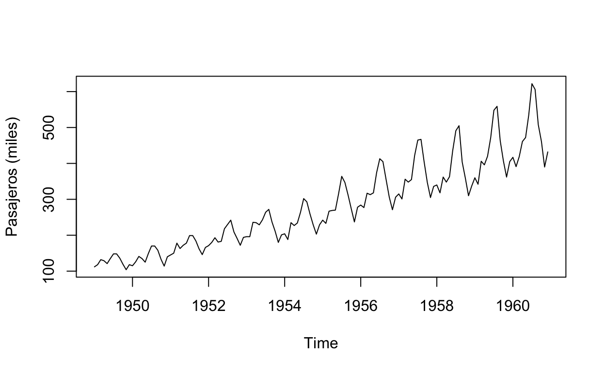
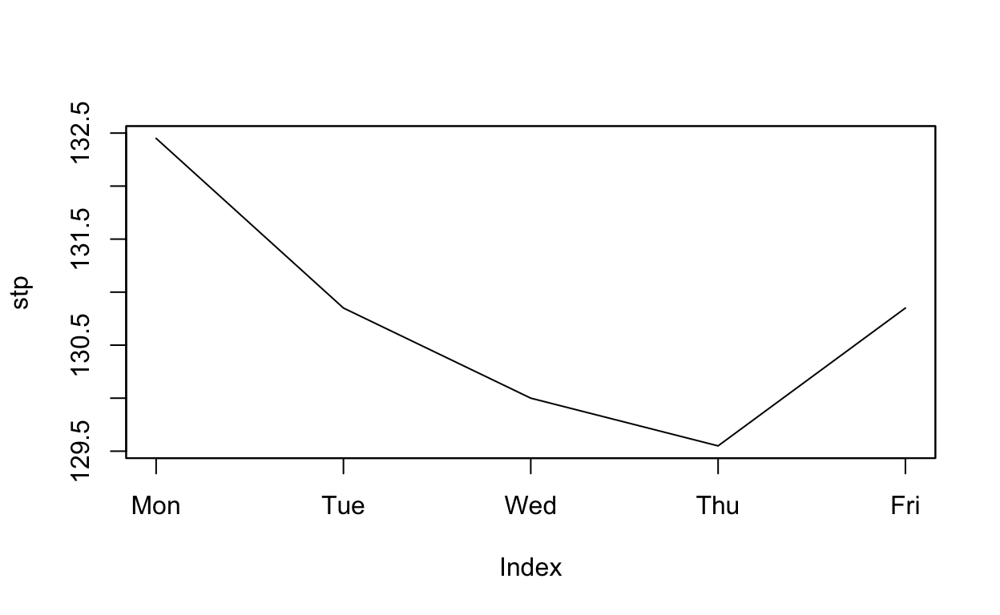
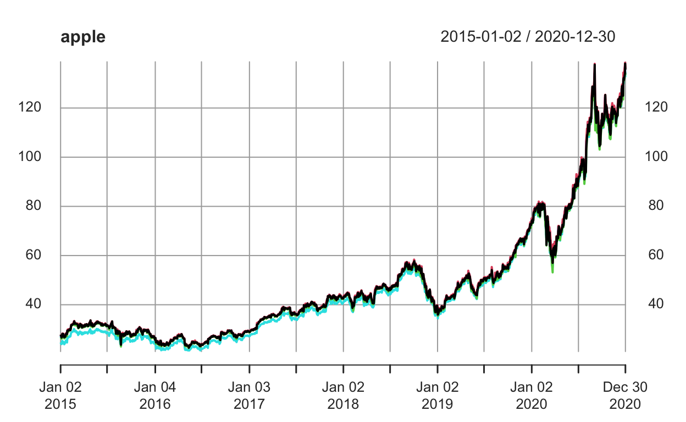
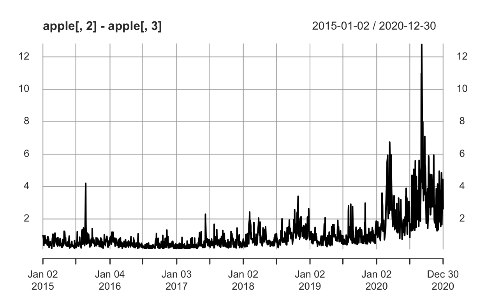
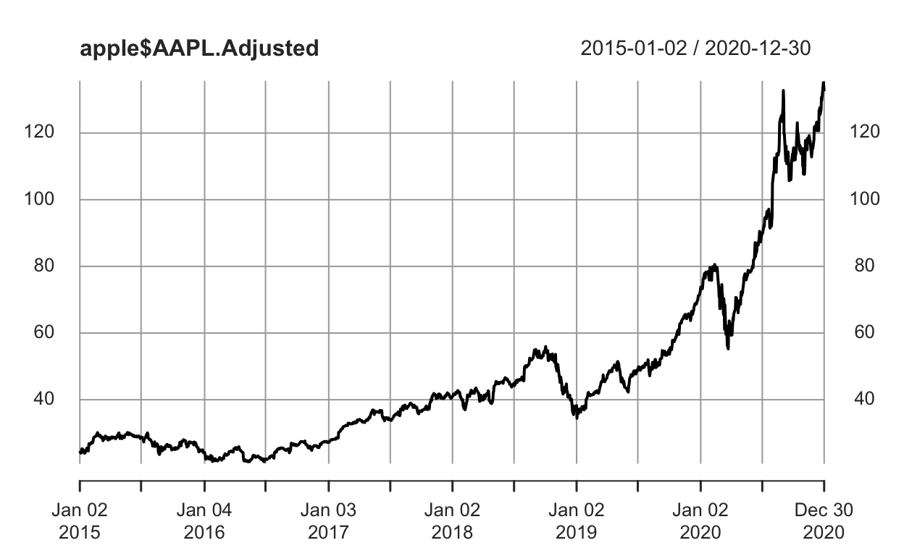

Antes de comenzar con series de tiempo, vamos a familiarizarnos con los documentos de R. En particular nos enfocamos en los archivos.Rmd que se pueden pensar como los notebooks de R (notebooks en Python, livescrips en MATLAB, etc.). Por tu cuenta puedes revisar los scripts, archivos.R
Si vas a trabajar de forma especifica
File >> New ProjectPero no es necesaria. Creamos un archivo nuevo
File >> New FILE >> R MarkdownPara este taller preferimos los documentos html. La funcionalidad se puede consultar en el formulario Apéndices >> Formularios >> rmarkdown:
- Configurar documento
- Insertar matemáticas
- Editar documentos
- …
No se debe pensar que en el formulario se encuentran todas las posibilidades de los documentos _*.Rmd_, por ejemplo, el siguiente código es una forma alternativa de insertar imágenes
```{r}
knitr::include_graphics("imagenes/tablaacf.png")
```En Más enlaces del apéndice se pueden encontrar documentos dedicadosa Rmarkdonw.
Existen paquetes especializados que extienden el funcionamiento de los archivos _*.Rmd_, cada uno sigue su sintaxis y especificaciones. Por ejemplo, este sitio se creo con el paquete distill
Como ejemplo se puede descargar el archivo Rmd de la Actividad 0, para ver un ejemplo de uso.
Actividad 1, Problemas 1 y 2
Series de tiempo, práctica
Es suficiente pensar (por el momento) a una serie de tiempo (ST) como mediciones (contradominio) de una variable conforme transcurre el tiempo (dominio)
En el paquete datasets se encuentra el conjunto de datos AirPassengers. Investiga de que trata este conjunto
?AirPassengers Cargamos el conjunto de datos.
data(AirPassengers)
AP <- AirPassengers
AP Jan Feb Mar Apr May Jun Jul Aug Sep Oct Nov Dec
1949 112 118 132 129 121 135 148 148 136 119 104 118
1950 115 126 141 135 125 149 170 170 158 133 114 140
1951 145 150 178 163 172 178 199 199 184 162 146 166
1952 171 180 193 181 183 218 230 242 209 191 172 194
1953 196 196 236 235 229 243 264 272 237 211 180 201
1954 204 188 235 227 234 264 302 293 259 229 203 229
1955 242 233 267 269 270 315 364 347 312 274 237 278
1956 284 277 317 313 318 374 413 405 355 306 271 306
1957 315 301 356 348 355 422 465 467 404 347 305 336
1958 340 318 362 348 363 435 491 505 404 359 310 337
1959 360 342 406 396 420 472 548 559 463 407 362 405
1960 417 391 419 461 472 535 622 606 508 461 390 432Vemos con que tipo de variable trabajamos
class(AP)[1] "ts"Esto siempre es una buena práctica, para saber que podemos o no hacer.
Si se consulta la ayuda de ts, se puede encontrar la siguiente referencia (CRAN task view) sobre Series de tiempo en R
Para ver el contenido del paquete stats (Help >> home >> packages). Esta biblioteca nos importa porque una de sus funciones es ts.
library(help = "stats")Ahí se puede investigar sobre todas las funciones.
La gráfica matemática de la variable AP sería.
plot(AP, ylab = "Pasajeros (miles)", type = "p")
La gráfica en series de tiempo se acostumbra como
plot(AP, ylab = "Pasajeros (miles)")
Actividad 1, Problema 3 y 4
Se pueden identificar algunas componentes en una serie de tiempo
- Tendencia (Trend). Un cambio sistemático que no aparece periódico
- Estacionalidad (Season). Un patrón repetido (depende de la unidad, podría ser anual)
- Ciclos (cycles). Repeticiones que no corresponden a algo fijo
- Aleatoriedad (stochastic). Cambios aleatorios
- Valores atípicos (Outliers). Mediciones muy alejadas del promedio
- Valores erróneos. Datos no disponibles, valores mal registrados, etc.
Actividad 2
Manipulación y gráficas de series de tiempo
Teoría: Funciones en tiempo discreto
Actividad 3
Es importante distinguir la implemetación computacional (por ejemplo los elementos ts) respecto de la abstracción matemática (funciones en tiempo discreto).
En R por lo menos se tienen ocho maneras de representar series de tiempo, dos de las formas más utilizadas son las implementadas en los paquetes: xts y zoo, con las siguientes instrucciones se pueden consultar sus viñetas
Casi todo lo que se puede hacer con zoo se puede hacer con xts.
precios <- c(132.45, 130.85, 130.00, 129.55, 130.85)
# los primeros 5 mediciones de enero
fechas <- as.Date(c(
"2010-01-04", "2010-01-05", "2010-01-06",
"2010-01-07", "2010-01-08"
))
stp <- zoo(precios, fechas)
print(stp)2010-01-04 2010-01-05 2010-01-06 2010-01-07 2010-01-08
132.45 130.85 130.00 129.55 130.85 plot(stp)
coredata(stp) # valores [1] 132.45 130.85 130.00 129.55 130.85index(stp) # fechas[1] "2010-01-04" "2010-01-05" "2010-01-06" "2010-01-07" "2010-01-08"¿Cuál es la descripción del paquete quantmod?
Se consultan los precios de las acciones de Apple del 2015 al 2020
getSymbols("AAPL", src = "yahoo", from = '2015-01-01',
to = "2020-12-31",warnings = FALSE,
auto.assign = TRUE)[1] "AAPL"los primeros elementos
[1] "xts" "zoo"head(AAPL) AAPL.Open AAPL.High AAPL.Low AAPL.Close AAPL.Volume
2015-01-02 27.8475 27.8600 26.8375 27.3325 212818400
2015-01-05 27.0725 27.1625 26.3525 26.5625 257142000
2015-01-06 26.6350 26.8575 26.1575 26.5650 263188400
2015-01-07 26.8000 27.0500 26.6750 26.9375 160423600
2015-01-08 27.3075 28.0375 27.1750 27.9725 237458000
2015-01-09 28.1675 28.3125 27.5525 28.0025 214798000
AAPL.Adjusted
2015-01-02 24.67825
2015-01-05 23.98302
2015-01-06 23.98528
2015-01-07 24.32161
2015-01-08 25.25610
2015-01-09 25.28319los últimos elementos
apple <- AAPL
tail(apple) AAPL.Open AAPL.High AAPL.Low AAPL.Close AAPL.Volume
2020-12-22 131.61 134.41 129.65 131.88 168904800
2020-12-23 132.16 132.43 130.78 130.96 88223700
2020-12-24 131.32 133.46 131.10 131.97 54930100
2020-12-28 133.99 137.34 133.51 136.69 124486200
2020-12-29 138.05 138.79 134.34 134.87 121047300
2020-12-30 135.58 135.99 133.40 133.72 96452100
AAPL.Adjusted
2020-12-22 130.7131
2020-12-23 129.8013
2020-12-24 130.8023
2020-12-28 135.4806
2020-12-29 133.6767
2020-12-30 132.5369Las primeras dos semanas (revisa el calendario de 2015)
first(apple, "2 weeks") AAPL.Open AAPL.High AAPL.Low AAPL.Close AAPL.Volume
2015-01-02 27.8475 27.8600 26.8375 27.3325 212818400
2015-01-05 27.0725 27.1625 26.3525 26.5625 257142000
2015-01-06 26.6350 26.8575 26.1575 26.5650 263188400
2015-01-07 26.8000 27.0500 26.6750 26.9375 160423600
2015-01-08 27.3075 28.0375 27.1750 27.9725 237458000
2015-01-09 28.1675 28.3125 27.5525 28.0025 214798000
AAPL.Adjusted
2015-01-02 24.67825
2015-01-05 23.98302
2015-01-06 23.98528
2015-01-07 24.32161
2015-01-08 25.25610
2015-01-09 25.28319el último mes
last(apple, "month") AAPL.Open AAPL.High AAPL.Low AAPL.Close AAPL.Volume
2020-12-01 121.01 123.47 120.01 122.72 127728200
2020-12-02 122.02 123.37 120.89 123.08 89004200
2020-12-03 123.52 123.78 122.21 122.94 78967600
2020-12-04 122.60 122.86 121.52 122.25 78260400
2020-12-07 122.31 124.57 122.25 123.75 86712000
2020-12-08 124.37 124.98 123.09 124.38 82225500
2020-12-09 124.53 125.95 121.00 121.78 115089200
2020-12-10 120.50 123.87 120.15 123.24 81312200
2020-12-11 122.43 122.76 120.55 122.41 86939800
2020-12-14 122.60 123.35 121.54 121.78 79184500
2020-12-15 124.34 127.90 124.13 127.88 157243700
2020-12-16 127.41 128.37 126.56 127.81 98208600
2020-12-17 128.90 129.58 128.04 128.70 94359800
2020-12-18 128.96 129.10 126.12 126.66 192541500
2020-12-21 125.02 128.31 123.45 128.23 121251600
2020-12-22 131.61 134.41 129.65 131.88 168904800
2020-12-23 132.16 132.43 130.78 130.96 88223700
2020-12-24 131.32 133.46 131.10 131.97 54930100
2020-12-28 133.99 137.34 133.51 136.69 124486200
2020-12-29 138.05 138.79 134.34 134.87 121047300
2020-12-30 135.58 135.99 133.40 133.72 96452100
AAPL.Adjusted
2020-12-01 121.6342
2020-12-02 121.9910
2020-12-03 121.8522
2020-12-04 121.1683
2020-12-07 122.6551
2020-12-08 123.2795
2020-12-09 120.7025
2020-12-10 122.1496
2020-12-11 121.3269
2020-12-14 120.7025
2020-12-15 126.7485
2020-12-16 126.6791
2020-12-17 127.5613
2020-12-18 125.5393
2020-12-21 127.0954
2020-12-22 130.7131
2020-12-23 129.8013
2020-12-24 130.8023
2020-12-28 135.4806
2020-12-29 133.6767
2020-12-30 132.5369Obtener elementos específicos
print(apple[2]) # Segundo elemento AAPL.Open AAPL.High AAPL.Low AAPL.Close AAPL.Volume
2015-01-05 27.0725 27.1625 26.3525 26.5625 257142000
AAPL.Adjusted
2015-01-05 23.98302print(apple[2:4]) # Del segundo al cuarto AAPL.Open AAPL.High AAPL.Low AAPL.Close AAPL.Volume
2015-01-05 27.0725 27.1625 26.3525 26.5625 257142000
2015-01-06 26.6350 26.8575 26.1575 26.5650 263188400
2015-01-07 26.8000 27.0500 26.6750 26.9375 160423600
AAPL.Adjusted
2015-01-05 23.98302
2015-01-06 23.98528
2015-01-07 24.32161 AAPL.Open AAPL.High AAPL.Low AAPL.Close AAPL.Volume
2015-01-06 26.6350 26.8575 26.1575 26.5650 263188400
2015-01-08 27.3075 28.0375 27.1750 27.9725 237458000
2015-01-12 28.1500 28.1575 27.2000 27.3125 198603200
2015-01-14 27.2600 27.6225 27.1250 27.4500 195826400
2015-01-16 26.7575 26.8950 26.3000 26.4975 314053200
2015-01-20 26.9600 27.2425 26.6250 27.1800 199599600
2015-01-22 27.5650 28.1175 27.4300 28.1000 215185600
2015-01-26 28.4350 28.5900 28.2000 28.2750 222460000
2015-01-28 29.4075 29.5300 28.8275 28.8275 585908400
2015-01-30 29.6000 30.0000 29.2125 29.2900 334982000
AAPL.Adjusted
2015-01-06 23.98528
2015-01-08 25.25610
2015-01-12 24.66019
2015-01-14 24.78433
2015-01-16 23.92434
2015-01-20 24.54056
2015-01-22 25.37122
2015-01-26 25.52922
2015-01-28 26.02807
2015-01-30 26.44565print(apple['201501']) # enero 2015 AAPL.Open AAPL.High AAPL.Low AAPL.Close AAPL.Volume
2015-01-02 27.8475 27.8600 26.8375 27.3325 212818400
2015-01-05 27.0725 27.1625 26.3525 26.5625 257142000
2015-01-06 26.6350 26.8575 26.1575 26.5650 263188400
2015-01-07 26.8000 27.0500 26.6750 26.9375 160423600
2015-01-08 27.3075 28.0375 27.1750 27.9725 237458000
2015-01-09 28.1675 28.3125 27.5525 28.0025 214798000
2015-01-12 28.1500 28.1575 27.2000 27.3125 198603200
2015-01-13 27.8575 28.2000 27.2275 27.5550 268367600
2015-01-14 27.2600 27.6225 27.1250 27.4500 195826400
2015-01-15 27.5000 27.5150 26.6650 26.7050 240056000
2015-01-16 26.7575 26.8950 26.3000 26.4975 314053200
2015-01-20 26.9600 27.2425 26.6250 27.1800 199599600
2015-01-21 27.2375 27.7650 27.0675 27.3875 194303600
2015-01-22 27.5650 28.1175 27.4300 28.1000 215185600
2015-01-23 28.0750 28.4375 27.8825 28.2450 185859200
2015-01-26 28.4350 28.5900 28.2000 28.2750 222460000
2015-01-27 28.1050 28.1200 27.2575 27.2850 382274800
2015-01-28 29.4075 29.5300 28.8275 28.8275 585908400
2015-01-29 29.0800 29.7975 28.8900 29.7250 337745600
2015-01-30 29.6000 30.0000 29.2125 29.2900 334982000
AAPL.Adjusted
2015-01-02 24.67825
2015-01-05 23.98302
2015-01-06 23.98528
2015-01-07 24.32161
2015-01-08 25.25610
2015-01-09 25.28319
2015-01-12 24.66019
2015-01-13 24.87915
2015-01-14 24.78433
2015-01-15 24.11169
2015-01-16 23.92434
2015-01-20 24.54056
2015-01-21 24.72790
2015-01-22 25.37122
2015-01-23 25.50214
2015-01-26 25.52922
2015-01-27 24.63537
2015-01-28 26.02807
2015-01-29 26.83842
2015-01-30 26.44565print(apple['20160201/20160213']) AAPL.Open AAPL.High AAPL.Low AAPL.Close AAPL.Volume
2016-02-01 24.1175 24.1775 23.8500 24.1075 163774000
2016-02-02 23.8550 24.0100 23.5700 23.6200 149428800
2016-02-03 23.7500 24.2100 23.5200 24.0875 183857200
2016-02-04 23.9650 24.3325 23.7975 24.1500 185886800
2016-02-05 24.1300 24.2300 23.4225 23.5050 185672400
2016-02-08 23.2825 23.9250 23.2600 23.7525 216085600
2016-02-09 23.5725 23.9850 23.4825 23.7475 177324800
2016-02-10 23.9800 24.0875 23.5250 23.5675 169374400
2016-02-11 23.4475 23.6800 23.1475 23.4250 200298800
2016-02-12 23.5475 23.6250 23.2525 23.4975 161405600
AAPL.Adjusted
2016-02-01 22.13729
2016-02-02 21.68963
2016-02-03 22.11893
2016-02-04 22.29665
2016-02-05 21.70115
2016-02-08 21.92966
2016-02-09 21.92504
2016-02-10 21.75885
2016-02-11 21.62729
2016-02-12 21.69422Graficamos las columnas excepto volume
apple$AAPL.Volume <- NULL # borramos la columna
plot(apple)
Gráficamos el maximo, el mínimo
Gráficamos la apertura y el cierre
Se puede graficar el logarirmo de la serie, y graficar
Gráficamos la diferencia
plot( apple[,2] - apple[,3])
apple$dif <- apple[,2] - apple[,3]
head(apple) AAPL.Open AAPL.High AAPL.Low AAPL.Close AAPL.Adjusted
2015-01-02 27.8475 27.8600 26.8375 27.3325 24.67825
2015-01-05 27.0725 27.1625 26.3525 26.5625 23.98302
2015-01-06 26.6350 26.8575 26.1575 26.5650 23.98528
2015-01-07 26.8000 27.0500 26.6750 26.9375 24.32161
2015-01-08 27.3075 28.0375 27.1750 27.9725 25.25610
2015-01-09 28.1675 28.3125 27.5525 28.0025 25.28319
dif
2015-01-02 1.022501
2015-01-05 0.809999
2015-01-06 0.700001
2015-01-07 0.375000
2015-01-08 0.862501
2015-01-09 0.760000Se puede graficar solo una serie
plot(apple$AAPL.Adjusted)
Un formualario de xts se puede consultar en el siguiente enlace
Actividad 4
Operaciones en ST
Se pueden realizar diferentes operaciones a las series de tiempo
Operación lag
Tenemos la siguiente ST
precios <- c(132.45, 130.85, 130.00, 129.55, 130.85)
# los primeros 5 mediciones de enero
fechas <- as.Date(c(
"2010-01-04", "2010-01-05", "2010-01-06",
"2010-01-07", "2010-01-08"
))
stp <- xts(precios, fechas) # nunca se cargo xts, ¿Qué pasó?
stp [,1]
2010-01-04 132.45
2010-01-05 130.85
2010-01-06 130.00
2010-01-07 129.55
2010-01-08 130.85Se pueden realizar traslaciones
lag(stp) # stp(t-1) [,1]
2010-01-04 NA
2010-01-05 132.45
2010-01-06 130.85
2010-01-07 130.00
2010-01-08 129.55lag(stp,2) # stp(t-2) [,1]
2010-01-04 NA
2010-01-05 NA
2010-01-06 132.45
2010-01-07 130.85
2010-01-08 130.00lag(stp,-1) # stp(t-(-1))=stp(t+1) [,1]
2010-01-04 130.85
2010-01-05 130.00
2010-01-06 129.55
2010-01-07 130.85
2010-01-08 NAOperación diff
Tenemos la ST
stp [,1]
2010-01-04 132.45
2010-01-05 130.85
2010-01-06 130.00
2010-01-07 129.55
2010-01-08 130.85La operación diff crea la serie \(Y_t\) a partir de la serie \(y_t\) \[Y_{t}=y_t-y_{t-1}\]
diff(stp) [,1]
2010-01-04 NA
2010-01-05 -1.60
2010-01-06 -0.85
2010-01-07 -0.45
2010-01-08 1.30diff(stp, 2) [,1]
2010-01-04 NA
2010-01-05 NA
2010-01-06 -2.45
2010-01-07 -1.30
2010-01-08 0.85Aplicación de funciones
Operacion por fechas
Tomamos un año de la serie apple
ap1 <- apple$AAPL.Adjusted["2016"]
head(ap1) AAPL.Adjusted
2016-01-04 24.18504
2016-01-05 23.57898
2016-01-06 23.11755
2016-01-07 22.14188
2016-01-08 22.25896
2016-01-11 22.61939tail(ap1) AAPL.Adjusted
2016-12-22 27.29050
2016-12-23 27.34447
2016-12-27 27.51813
2016-12-28 27.40080
2016-12-29 27.39375
2016-12-30 27.18020# apply.daily(ap1, mean)
# apply.weekly(ap1, mean)
apply.monthly(ap1, mean) AAPL.Adjusted
2016-01-29 22.59619
2016-02-29 22.08176
2016-03-31 24.06637
2016-04-29 24.63689
2016-05-31 22.03605
2016-06-30 22.43758
2016-07-29 22.88674
2016-08-31 25.12010
2016-09-30 25.88265
2016-10-31 27.01501
2016-11-30 25.83786
2016-12-30 26.83187apply.quarterly(ap1, mean) AAPL.Adjusted
2016-03-31 22.95775
2016-06-30 23.02748
2016-09-30 24.67239
2016-12-30 26.56158apply.yearly(ap1, mean) AAPL.Adjusted
2016-12-30 24.31188Actividad 5
Teoría: Ecuaciones en diferencias
Actividad 6
(Opcional) Teoría: Transformada \(\mathscr{Z}\)
(Opcional) Teoría: Sistemas en diferencias
Teoría: Distribución normal
Actividad 7
Ejemplo (Parte I): COVID
Para esta parte se instaló el paquete covidMex con las instrucciones de la siguiente página, este paquete permite una adquisión de datos preprocesados.
Tomamos datos sobre COVID en México, hasta el 10 de junio de 2020
install.packages('devtools')
devtools::install_github("pablorm296/covidMex")
library(covidMex)Para esta parte se proporciona el enlace a los Datos10deJunioconfirmados.csv. Las librerias que se van a utilizar
Ahora se muestran los casos acumulados para México por estado, ver Figura 1
# configiramos los botones del menú
myMenuItems <- c("downloadPNG", "downloadJPEG", "downloadPDF", "downloadCSV" )
confirmados<-read.csv("Datos/Datos10deJunioconfirmados.csv")
# show_col_types = FALSE)
confirmados%>%
count(nom_ent)%>%
hchart('treemap',
hcaes(x='nom_ent', value='n',color = 'n'))%>%
hc_add_theme(hc_theme_ffx())%>%
hc_title(
text = "Número de casos confirmados acumulados por estado"
) %>%
hc_subtitle(text = "Coloca el cursor sobre los cuadros") %>%
hc_exporting(enabled = TRUE,
filename = "datos",
buttons = list(contextButton = list(menuItems = myMenuItems)))Figure 1: Casos confirmados acumulados por estado
La Figura 2 muestra los casos confirmados agrupados por edad en intervalos de 10 años y la Figura 3 muestra los casos confirmados agrupados por edad y sexo en intervalos de 10 años.
confirmados<-
mutate(confirmados,GrupoEdad = cut(edad,
breaks = c(seq(0, 90, by = 10), Inf),
include.lowest = T))
confirmados%>%
count(GrupoEdad)%>%
hchart('treemap',
hcaes(x='GrupoEdad', value='n',color = 'n'))%>%
hc_add_theme(hc_theme_ffx())%>%
hc_title(
text = "Número de casos confirmados acumulados agupados por edad"
) %>%
hc_subtitle(text = "Las edades están agrupadas en intervalos
de 10 años (coloca el cursor sobre los cuadros)") %>%
hc_exporting(enabled = TRUE,
filename = "datos",
buttons = list(contextButton = list(menuItems = myMenuItems)))Figure 2: Casos acumulados confirmados por edad
confirmados%>%
count(GrupoEdad, sexo)%>%
hchart('column',
hcaes(x='GrupoEdad', y='n', group='sexo'))%>%
hc_add_theme(hc_theme_ffx())%>%
hc_title(
text = "Número de casos confirmados agrupados por edad y sexo"
) %>%
hc_subtitle(text = "Las edades están agrupadas en intervalos
de 10 años (da clic sobre F o M)") %>%
hc_credits(
enabled = TRUE, text = "Source: SSS",
style = list(fontSize = "12px"))%>%
hc_yAxis(title = list(text = "Número de casos confirmados"))%>%
hc_xAxis(title=list(text="Intervalos de 10 años"))%>%
hc_exporting(enabled = TRUE,
filename = "datos",
buttons = list(contextButton = list(menuItems = myMenuItems)))Figure 3: Casos acumulados confirmados por edad y sexo
Para los casos conformados como serie de tiempo se toman los datos del repositorio de mariorz en github 1, aunque los dados ya están bastante preprocesados, se hacen algunas adecuaciones sobre el formato de fecha. Los datos utilizados entán en el siguiente enlace: Datos10deJunioSeries.csv
#casos_mx_st <- read_csv(
#url(
#"https://raw.githubusercontent.com/mariorz/covid19-mx-time-series/
#master/data/covid19_confirmed_mx.csv"))
#write.csv(casos_mx_st, file = "Datos10deJunioSeries.csv")
casos_mx_st <- read_csv("Datos/Datos10deJunioSeries.csv") %>%
select(-c(1))
casos_m<-casos_mx_st %>%
pivot_longer(-Estado, names_to = "fecha_corte",
values_to = "casos")
casos_m$fecha <- format(as.Date(casos_m$fecha_corte,
format = "%d-%m-%Y"), "%Y-%m-%d")En la Figura 4 se muestra la evolución en el tiempo de los casos confirmados acumulados2 en México para cada entidad federativa.
casos_m %>%
hchart('line',hcaes(x=as.Date(fecha), y=casos, group=Estado))%>%
hc_add_theme(hc_theme_ffx())%>%
hc_title(text = "Casos confirmados para cada estado por día")%>%
#margin = 20, align = "left",
#style = list(color = "#90ed7d", useHTML = TRUE)) %>%
hc_subtitle(text = "Da click sobre el nombre de cada estado
para ocultar")%>%
# align = "left",
# style = list(color = "#2b908f", fontWeight = "bold")) %>%
hc_yAxis(title = list(text = "Número de casos confirmados"))%>%
hc_xAxis(title = list(text = "Fecha (colocar el apuntador sobre
las gráficas)"))%>%
hc_legend(align = "right", verticalAlign = "top",
layout = "vertical", x = 0, y = 100) %>%
hc_exporting(enabled = TRUE,
filename = "datos",
buttons = list(contextButton = list(menuItems = myMenuItems)))Figure 4: Casos confirmados acumulados para cada estado por día
La Ciudad de México, Estado de México y Baja California han sido las ciudades que durante cada día se han colocado en los primeros 3 lugares nacionales, en particular se había mostrado en la Figura 1 para el corte al día del 10 de junio.
Para tener una mejor visualización se tratará a los datos para escribirlos en un formato de fecha tipo xts, para ello se crea una matriz donde cada columna corresponde a un estado, cada fila a una fecha, y cada celda a los casos confirmados reportados, posteriormente esta matriz será la información para nuestro variable tipo xts.
casosor_m<-casos_m %>%
arrange(fecha)
fechas<-unique(casosor_m$fecha)
estados<-unique(casosor_m$Estado)
idx<-as.Date(fechas)
M<-matrix(0,nrow=length(fechas),ncol=length(estados))
colnames(M)<-estados
rownames(M)<-fechas
for(i in fechas){
for (j in estados) {
tempo<-casosor_m%>%
filter(fecha==i & Estado==j)%>%select(casos)
M[i,j]<-tempo$casos[[1]]
}
}
ex_matrix <- xts(M,order.by = idx)Se utiliza una herramienta que nos permite una visualización para diferentes intervalos de tiempo, la Figura 5 muestra el resultado para los 3 estados con mayor número de casos confirmados
estados_m<-c("Ciudad de México","México","Baja California")
hc<-highchart(type="stock")
for (j in estados_m){
hc<-hc%>% hc_add_series(name=j,ex_matrix[,j], id=j)
}
hc<-hc%>%
hc_add_theme(hc_theme_ffx())%>%
hc_title(text = "Casos confirmados para los tres estados
con más reportes")%>%
#margin = 20, align = "left",
#style = list(color = "#90ed7d", useHTML = TRUE)) %>%
hc_subtitle(text = "Utilice la herramienta de zoom en la
parte inferior")%>%
hc_exporting(enabled = TRUE,
filename = "datos",
buttons = list(contextButton = list(menuItems = myMenuItems)))%>%
hc_tooltip(crosshairs = TRUE, backgroundColor = "#FCFFC5",
shared = TRUE, borderWidth = 5) %>%
hc_yAxis(title = list(text = "Número de casos confirmados"))
hcFigure 5: Casos confirmados para CDMX, Estado de México, Baja California por día
Se tiene interés en los casos confirmados nacionales, que precisamente serán los que se estudiarán más alla de la visualización. La Figura 6, muestra la evolución de los casos nacionales.
casostotales<-casos_m %>%
group_by(fecha)%>%
summarise(casost=sum(casos))
casostotales_xts<-xts(casostotales$casost,
order.by = as.Date(casostotales$fecha))
highchart(type="stock")%>%
hc_add_series(name="México",casostotales_xts[,1])%>%
hc_add_theme(hc_theme_ffx())%>%
hc_title(text = "Casos confirmados para México")%>%
#margin = 20, align = "left",
#style = list(color = "#90ed7d", useHTML = TRUE)) %>%
hc_subtitle(text = "Utilice la herramienta de zoom en la parte
inferior")%>%
#hc_xAxis(title=list(text="dias"),categories = idx)%>%
hc_tooltip(crosshairs = TRUE, backgroundColor = "#FCFFC5",
shared = TRUE, borderWidth = 5) %>%
hc_yAxis(title = list(text = "Número de casos confirmados"))%>%
hc_exporting(enabled = TRUE,
filename = "datos",
buttons = list(contextButton = list(menuItems = myMenuItems)))Figure 6: Casos confirmados para México
Los casos confimados acumulados por estado al 10 de junio pueden observarse en el siguiente mapa
mapdata <- get_data_from_map(download_map_data("countries/mx/mx-all"))
M1<-M
colnames(M1)[9]<-"Distrito federal"
res<-M1[nrow(M1),]
datos_tol <- mapdata %>%
select(code = `woe-name`) %>%
arrange(code)%>%
mutate(value=c(res,0))
mapdata<-mapdata%>%arrange(`woe-name`)
hcmap("countries/mx/mx-all", data = datos_tol, value = "value",
joinBy = c("woe-name", "code"), name = "Casos Confirmados")%>%
hc_colorAxis(dataClasses = color_classes(c(seq(0, 6000, by = 1000), 50000)))%>%
hc_legend(layout = "vertical", align = "right",
floating = TRUE, valueDecimals = 0)Figure 7: Casos confirmados para México al 10 junio de 2020
Se analizarán los casos confirmados nacionales.
Se quiere estudiar el número de casos confirmados de CoVID-19 en México, esta variable se denotará como \(C_t\) donde \(t\) hace referencia a la fecha de observación de la variable
La Figura 8 superior muestra la gráfica de la serie. Se podría estar interesado en estudiar el cambio en los casos reportados \(\Delta C_t=C_t-C_{t-1}\), ver Figura 8 inferior, a algún otro comportamento como \(\log(C_t)\) o \(\Delta \log(C_t)\approx \frac{C_t-C_{t-1}}{C_{t-1}}\).
highchart(type = "stock") %>%
hc_yAxis_multiples(
create_axis(2, height = c(2, 2))) %>%
hc_add_series(name="Total",casostotales_xts[,1],yAxis=0)%>%
hc_add_series(name="Diferencias",
diff(casostotales_xts[,1],2), yAxis=1)%>%
hc_add_theme(hc_theme_ffx())%>%
hc_title(text = "Casos confirmados para México")%>%
#margin = 20, align = "left",
#style = list(color = "#90ed7d", useHTML = TRUE)) %>%
hc_subtitle(text = "Utilice la herramienta de zoom en la parte
inferior")%>%
hc_tooltip(crosshairs = TRUE, backgroundColor = "#FCFFC5",
shared = TRUE, borderWidth = 5) %>%
#hc_yAxis(title = list(text = "Número de casos confirmados"))%>%
hc_exporting(enabled = TRUE,
filename = "datos",
buttons = list(contextButton = list(menuItems = myMenuItems)))Figure 8: Casos confirmados para México
Una primera observación es que se trabajará con los datos a partir de la detección del primer caso, no tiene sentido trabajar con observaciones nulas, pues la observación de la variable es cero desde \(-\infty\) hasta el día anterior del primer caso, el primer caso confirmado en México fue el 28 de febrero, la Figura 9 muestra esta ventana de datos para las variables, \(C_t\), \(\Delta C_t\), \(\log(C_t)\), \(\Delta \log(C_t)\).
casospar<-casos_m %>%
group_by(fecha)%>%
summarise(casost=sum(casos))%>%
filter(casost!=0)
casospar_xts<-xts(casospar$casost,
order.by = as.Date(casospar$fecha))
highchart(type = "stock")%>%
hc_yAxis_multiples(
create_axis(4, height = c(2,2,2,2))) %>%
hc_add_series(name="Parcial",casospar_xts[,1], yAxis=0)%>%
hc_add_series(name="Diferencias P",
diff(casospar_xts[,1]), yAxis=1)%>%
hc_add_series(name="Logaritmo",
log(casospar_xts[,1]), yAxis=2)%>%
hc_add_series(name="Diferencias L",
diff(log(casospar_xts[,1])), yAxis=3)%>%
hc_add_theme(hc_theme_ffx())%>%
hc_title(text = "Casos confirmados para México
desde el primer caso")%>%
#margin = 20, align = "left",
#style = list(color = "#90ed7d", useHTML = TRUE)) %>%
hc_subtitle(text = "Utilice la herramienta de zoom en la
parte inferior")%>%
hc_tooltip(crosshairs = TRUE, backgroundColor = "#FCFFC5",
shared = TRUE, borderWidth = 5) %>%
#hc_yAxis(title = list(text = "Número de casos confirmados"))%>%
hc_exporting(enabled = TRUE,
filename = "datos",
buttons = list(contextButton = list(menuItems = myMenuItems)))Figure 9: Casos confirmados para México
Actividad 8
Para ello se cosultó la página https://rpubs.com/lokraj/github_csv↩︎
nos referimos a los casos confirmados acumulados como casos confirmados↩︎